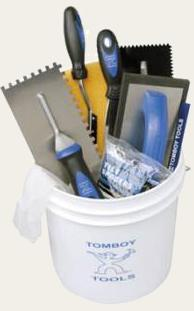
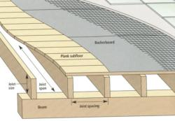
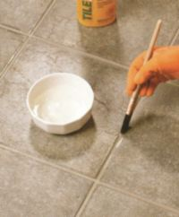

| What do I need? Tools: For tiling project you will need; chalk line 1/4" square-notched trowel, drill, rubber mallet, tile-cutting tools, needlenose pliers, utility knife, grout float, grout sponge, buff rag, and foam brush. Materials: Tile, thin-set mortar, tile spacers, threshold material, grout, latex additive (mortar and grout) grout sealer, silicone caulk. |
 |
Things You should do before tiling. |
|
 Subfloor Types Backerboard  The old style installations set tiles on a thick bed of mortar. Backerboard is an excellent modern day substitute. Use as thick a board as possible, installed over a plywood subfloor. Concrete 
It's being considered as the best subsurface for straightening out-of-level floors. |
Plywood  It's a soft and flexible material but at the same time very strong. When two sheets are laminated together, the result is a very firm surface. Tilling floors Before tiling your floor you should be aware if your floor is strong enough for this type of project. If you have any doubts about the strength of the floor, ask a contractor to inspect it before you begin tiling. Sometimes a bouncy floor can be firmed up by driving screws through the subflooring and into joints or you may have to add another subfloor layer, or even beef up the joints. Usually strength of the floor is determined by size and strength of the joints, span between supports as well as the amount of space between joists. See also how you can add warmth to your tile floor project. Click here |
Choosing sealers and finishes. Grout lines, unglazed tile, and unpolished natural stone are vulnerable to stains, dirt,grease, and mildew. For protection of porous surfaces, apply a sealer or finish. You have a wide variety of products to choose from and they might vary according to porosity of the material being covered and the degree of sheen you want. It's important that the surface is clean, dry, and free from any other coatings or wax before application. Usually sealers and finishes can be applied in one coat, but for very porous surfaces such as brick, two coats are needed. Make sure that the sealer or finish you use is rated for outdoor or indoor use only. Use a small paintbrush when sealing the grout alone; apply it with a roller when sealing tile and grout.  |
|
© Copyright 2012 TileEstimator.com All Rights Reserved